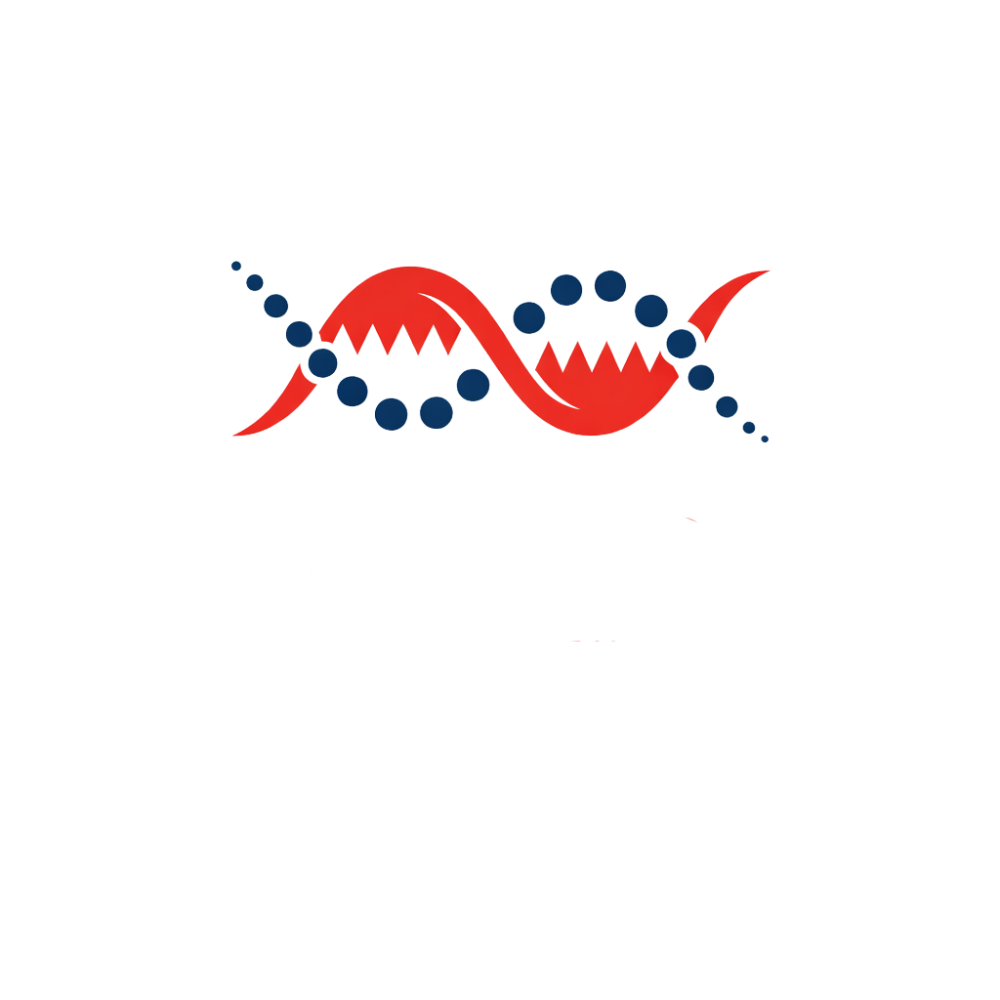

Identity foundation
Profiles, skills, preferences, diplomas, and current position create the first visible layer of the user's ADN.
Product thinking - 94%
Interface systems - 91%
Storytelling - 88%

CareerStrand helps students, beginners, and young professionals move step by step from profile building to learning, practice, community engagement, events, and real opportunity access.
Users register, complete profiles, and create the first layer of their ADN through skills and preferences.
Courses turn scattered learning into visible educational progression before users move to practical work.
Challenges, submissions, and community discussions create proof of skills and visible engagement.
Events, applications, and manager-facing opportunities turn progression into real career access.
Profiles, skills, preferences, diplomas, and current position create the first visible layer of the user's ADN.
Courses, challenges, and submissions transform isolated effort into measurable preparation and visible proof.
Community spaces, events, and beginner opportunities connect growth on the platform to real professional exposure.